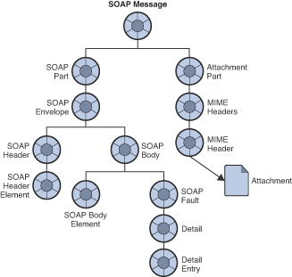
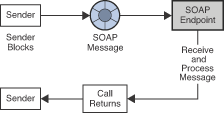

<SOAP-ENV:Envelope
xmlns:SOAP-ENV="http://schemas.xmlsoap.org/soap/envelope/"
SOAP-ENV:encodingStyle=
"http://schemas.xmlsoap.org/soap/encoding/">
<SOAP-ENV:Body>
<m:GetLastTradePrice xmlns:m="Some-URI">
<symbol>DIS</symbol>
</m:GetLastTradePrice>
</SOAP-ENV:Body>
</SOAP-ENV:Envelope>6 Working with SOAP Messages
SOAP is a protocol that allows for the exchange of data whose structure is defined by an XML scheme. Using Message Queue, you can send JMS messages that contain a SOAP payload. This allows you to transport SOAP messages reliably and to publish SOAP messages to JMS subscribers. This chapter covers the following topics:
If you are familiar with the SOAP specification, you can skip the introductory section and start by reading SOAP Messaging in JAVA.
What is SOAP?
SOAP, the Simple Object Access Protocol, is a protocol that allows the exchange of structured data between peers in a decentralized, distributed environment. The structure of the data being exchanged is specified by an XML scheme.
The fact that SOAP messages are encoded in XML makes SOAP messages
portable, because XML is a portable, system-independent way of
representing data. By representing data using XML, you can access data
from legacy systems as well as share your data with other enterprises.
The data integration offered by XML also makes this technology a natural
for Web-based computing such as Web services. Firewalls can recognize
SOAP packets based on their content type (text/xml-SOAP) and can
filter messages based on information exposed in the SOAP message header.
The SOAP specification describes a set of conventions for exchanging XML messages. As such, it forms a natural foundation for Web services that also need to exchange information encoded in XML. Although any two partners could define their own protocol for carrying on this exchange, having a standard such as SOAP allows developers to build the generic pieces that support this exchange. These pieces might be software that adds functionality to the basic SOAP exchange, or might be tools that administer SOAP messaging, or might even comprise parts of an operating system that supports SOAP processing. Once this support is put in place, other developers can focus on creating the Web services themselves.
The SOAP protocol is fully described at http://www.w3.org/TR/SOAP. This section restricts itself to discussing the reasons why you would use SOAP and to describing basic concepts that will make it easier to work with SOAP messages.
SOAP with Attachments API for Java
The Soap with Attachments API for Java (SAAJ) is a JAVA-based API that enforces compliance to the SOAP standard. When you use this API to assemble and disassemble SOAP messages, it ensures the construction of syntactically correct SOAP messages. SAAJ also makes it possible to automate message processing when several applications need to handle different parts of a message before forwarding it to the next recipient.
Figure 6-1 shows the layers that can come into play in the implementation of SOAP messaging. This chapter focuses on the SOAP and language implementation layers.
Figure 6-1 SOAP Messaging Layers

The sections that follow describe each layer shown in the preceding figure in greater detail. The rest of this chapter focuses on the SOAP and language implementation layers.
The Transport Layer
Underlying any messaging system is the transport or wire protocol that governs the serialization of the message as it is sent across a wire and the interpretation of the message bits when it gets to the other side. Although SOAP messages can be sent using any number of protocols, the SOAP specification defines only the binding with HTTP. SOAP uses the HTTP request/response message model. It provides SOAP request parameters in an HTTP request and SOAP response parameters in an HTTP response. The HTTP binding has the advantage of allowing SOAP messages to go through firewalls.
The SOAP Layer
Above the transport layer is the SOAP layer. This layer, which is defined in the SOAP Specification, specifies the XML scheme used to identify the message parts: envelope, header, body, and attachments. All SOAP message parts and contents, except for the attachments, are written in XML. The following sample SOAP message shows how XML tags are used to define a SOAP message:
The wire transport and SOAP layers are actually sufficient to do SOAP messaging. You could create an XML document that defines the message you want to send, and you could write HTTP commands to send the message from one side and to receive it on the other. In this case, the client is limited to sending synchronous messages to a specified URL. Unfortunately, the scope and reliability of this kind of messaging is severely restricted. To overcome these limitations, the provider and profile layers are added to SOAP messaging.
The Language Implementation Layer
A language implementation allows you to create XML messages that conform to SOAP, using API calls. For example, the SAAJ implementation of SOAP, allows a Java client to construct a SOAP message and all its parts as Java objects. The client would also use SAAJ to create a connection and use it to send the message. Likewise, a Web service written in Java could use the same implementation (SAAJ), or any other language implementation, to receive the message, to disassemble it, and to acknowledge its receipt.
The Profiles Layer
In addition to a language implementation, a SOAP implementation can offer services that relate to message delivery. These could include reliability, persistence, security, and administrative control, and are typically delivered by a SOAP messaging provider. These services will be provided for SOAP messaging by Message Queue in future releases.
Interoperability
Because SOAP providers must all construct and deconstruct messages as defined by the SOAP specification, clients and services using SOAP are interoperable. That is, as shown in Figure 6-2, the client and the service doing SOAP messaging do not need to be written in the same language nor do they need to use the same SOAP provider. It is only the packaging of the message that must be standard.
Figure 6-2 SOAP Interoperability

In order for a SAAJ client or service to interoperate with a service or client using a different implementation, the parties must agree on two things:
-
They must use the same transport bindings—that is, the same wire protocol.
-
They must use the same profile in constructing the SOAP message being sent.
The SOAP Message
Having surveyed the SOAP messaging layers, let’s examine the SOAP message itself. Although the work of rendering a SOAP message in XML is taken care of by the SAAJ implementation, you must still understand its structure in order to make the SAAJ calls in the right order.
A SOAP message is an XML document that consists of a SOAP envelope, an optional SOAP header, and a SOAP body. The SOAP message header contains information that allows the message to be routed through one or more intermediate nodes before it reaches its final destination.
-
The envelope is the root element of the XML document representing the message. It defines the framework for how the message should be handled and by whom. Once it encounters the Envelope element, the SOAP processor knows that the XML is a SOAP message and can then look for the individual parts of the message.
-
The header is a generic mechanism for adding features to a SOAP message. It can contain any number of child elements that define extensions to the base protocol. For example, header child elements might define authentication information, transaction information, locale information, and so on. The actors, the software that handle the message may, without prior agreement, use this mechanism to define who should deal with a feature and whether the feature is mandatory or optional.
-
The body is a container for mandatory information intended for the ultimate recipient of the message.
A SOAP message may also contain an attachment, which does not have to be in XML. For more information, see SOAP Packaging Models next.
A SOAP message is constructed like a nested matrioshka doll. When you use SAAJ to assemble or disassemble a message, you need to make the API calls in the appropriate order to get to the message part that interests you. For example, in order to add content to the message, you need to get to the body part of the message. To do this you need to work through the nested layers: SOAP part, SOAP envelope, SOAP body, until you get to the SOAP body element that you will use to specify your data. For more information, see The SOAP Message Object.
SOAP Packaging Models
The SOAP specification describes two models of SOAP messages: one that is encoded entirely in XML and one that allows the sender to add an attachment containing non-XML data. You should look over the following two figures and note the parts of the SOAP message for each model. When you use SAAJ to define SOAP messages and their parts, it will be helpful for you to be familiar with this information.
Figure 6-3 shows the SOAP model without attachments. This package includes a SOAP envelope, a header, and a body. The header is optional.
Figure 6-3 SOAP Message Without Attachments

When you construct a SOAP message using SAAJ, you do not have to specify which model you’re following. If you add an attachment, a message like that shown in Figure 6-4 is constructed; if you don’t, a message like that shown in Figure 6-3 is constructed.
Figure 6-3 shows a SOAP Message with attachments. The attachment part can contain any kind of content: image files, plain text, and so on. The sender of a message can choose whether to create a SOAP message with attachments. The message receiver can also choose whether to consume an attachment.
A message that contains one or more attachments is enclosed in a MIME envelope that contains all the parts of the message. In SAAJ, the MIME envelope is automatically produced whenever the client creates an attachment part. If you add an attachment to a message, you are responsible for specifying (in the MIME header) the type of data in the attachment.
Figure 6-4 SOAP Message with Attachments

SOAP Messaging in JAVA
The SOAP specification does not provide a programming model or even an API for the construction of SOAP messages; it simply defines the XML schema to be used in packaging a SOAP message.
SAAJ is an application programming interface that can be implemented to support a programming model for SOAP messaging and to furnish Java objects that application or tool writers can use to construct, send, receive, and examine SOAP messages. SAAJ defines two packages:
-
javax.xml.soap: you use the objects in this package to define the parts of a SOAP message and to assemble and disassemble SOAP messages. You can also use this package to send a SOAP message without the support of a provider. -
javax.xml.messaging: you use the objects in this package to send a SOAP message using a provider and to receive SOAP messages.
|
Note
|
Beginning with SAAJ 1.3, you must put the file |
This chapter focuses on the javax.xml.soap package and how you use the
objects and methods it defines
-
to assemble and disassemble SOAP messages
-
to send and receive these messages
It also explains how you can use the JMS API and Message Queue to send and receive JMS messages that carry SOAP message payloads.
The SOAP Message Object
A SOAP Message Object is a tree of objects as shown in
Figure 6-5. The classes or interfaces from which these
objects are derived are all defined in the javax.xml.soap package.
Figure 6-5 SOAP Message Object

As shown in the figure, the SOAPMessage object is a collection of
objects divided in two parts: a SOAP part and an attachment part. The
main thing to remember is that the attachment part can contain non-xml
data.
The SOAP part of the message contains an envelope that contains a body (which can contain data or fault information) and an optional header. When you use SAAJ to create a SOAP message, the SOAP part, envelope, and body are created for you: you need only create the body elements. To do that you need to get to the parent of the body element, the SOAP body.
In order to reach any object in the SOAPMessage tree, you must traverse
the tree starting from the root, as shown in the following lines of
code. For example, assuming the SOAPMessage is MyMsg, here are the
calls you would have to make in order to get the SOAP body:
SOAPPart MyPart = MyMsg.getSOAPPart();
SOAPEnvelope MyEnv = MyPart.getEnvelope();
SOAPBody MyBody = envelope.getBody();At this point, you can create a name for a body element (as described in Namespaces) and add the body element to the SOAPMessage.
For example, the following code line creates a name (a representation of an XML tag) for a body element:
Name bodyName = envelope.createName("Temperature");The next code line adds the body element to the body:
SOAPBodyElement myTemp = MyBody.addBodyElement(bodyName);Finally, this code line defines some data for the body element
bodyName :
myTemp.addTextNode("98.6");Inherited Methods
The elements of a SOAP message form a tree. Each node in that tree
implements the Node interface and, starting at the envelope level,
each node implements the SOAPElement interface as well. The resulting
shared methods are described in Table 6-1.
Table 6-1 Inherited Methods
| Inherited From | Method Name | Purpose |
|---|---|---|
|
|
Add an attribute with the specified |
+ |
|
Create a new (Use the |
+ |
|
Add a namespace declaration with the specified prefix and URI |
+ |
|
Create a new |
+ |
|
Return an iterator over all the attribute names in this object |
+ |
|
Return the value of the specified attribute |
+ |
|
Return an iterator over all the immediate content of this element |
+ |
|
Return an iterator over all the child elements with the specified name |
+ |
|
Return the name of this object |
+ |
|
Return the encoding style for this object |
+ |
|
Return an iterator of namespace prefixes |
+ |
|
Return the URI of the namespace with the given prefix |
+ |
|
Remove the specified attribute |
+ |
|
Remove the namespace declaration that corresponds to the specified prefix |
+ |
|
Set the encoding style for this object to that specified by |
|
|
Remove this |
+ |
|
Return the parent element of this |
+ |
|
Return the value of the immediate child of this |
+ |
|
Notify the implementation that his |
+ |
|
Set the parent of this object to that specified by the |
Namespaces
An XML namespace is a means of qualifying element and attribute names to
disambiguate them from other names in the same document. This section
provides a brief description of XML namespaces and how they are used in
SOAP. For complete information, see
http://www.w3.org/TR/REC-xml-names/
An explicit XML namespace declaration takes the following form:
<prefix:myElement
xmlns:prefix ="URI">The declaration defines prefix as an alias for the specified URI. In the
element myElement, you can use prefix with any element or attribute to
specify that the element or attribute name belongs to the namespace
specified by the URI.
The following is an example of a namespace declaration:
<SOAP-ENV:Envelope xmlns:SOAP-ENV="http://schemas.xmlsoap.org/soap/envelope/"This declaration defines SOAP_ENV as an alias for the namespace:
http://schemas.xmlsoap.org/soap/envelope/After defining the alias, you can use it as a prefix to any attribute or
element in the Envelope element. In Example 6-1, the
elements <Envelope> and <Body> and the attribute encodingStyle all
belong to the SOAP namespace specified by the
`http://schemas.sxmlsoap.org/soap/envelope/`URI .
Example 6-1 Explicit Namespace Declarations
<SOAP-ENV:Envelope
xmlns:SOAP-ENV="http://schemas.xmlsoap.org/soap/envelope/"
SOAP-ENV:encodingStyle=
"http://schemas.xmlsoap.org/soap/encoding/">
<SOAP-ENV:Header>
<HeaderA
xmlns="HeaderURI"
SOAP-ENV:mustUnderstand="0">
The text of the header
</HeaderA>
</SOAP-ENV:Header>
<SOAP-ENV:Body>
.
.
.
</SOAP-ENV:Body>
</SOAP-ENV:Envelope>Note that the URI that defines the namespace does not have to point to an actual location; its purpose is to disambiguate attribute and element names.
Pre-defined SOAP Namespaces
SOAP defines two namespaces:
-
The SOAP envelope, the root element of a SOAP message, has the following namespace identifier:
"http://schemas.xmlsoap.org/soap/envelope"
-
The SOAP serialization, the URI defining SOAP’s serialization rules, has the following namespace identifier:
"http://schemas.xmlsoap.org/soap/encoding"
When you use SAAJ to construct or consume messages, you are responsible for setting or processing namespaces correctly and for discarding messages that have incorrect namespaces.
Using Namespaces when Creating a SOAP Name
When you create the body elements or header elements of a SOAP message,
you must use the Name object to specify a well-formed name for the
element. You obtain a Name object by calling the method
SOAPEnvelope.createName.
When you call this method, you can pass a local name as a parameter or
you can specify a local name, prefix, and URI. For example, the
following line of code defines a name object bodyName.
Name bodyName = MyEnvelope.createName("TradePrice",
"GetLTP","http://foo.eztrade.com");This would be equivalent to the namespace declaration:
<GetLTP:TradePrice xmlns:GetLTP= "http://foo.eztrade.com">The following code shows how you create a name and associate it with a
SOAPBody element. Note the use and placement of the createName
method.
SoapBody body = envelope.getBody();//get body from envelope
Name bodyName = envelope.createName("TradePrice", "GetLTP",
"http://foo.eztrade.com");
SOAPBodyElement gltp = body.addBodyElement(bodyName);Parsing Name Objects
For any given Name object, you can use the following Name methods to
parse the name:
-
getQualifiedNamereturns "prefix:LocalName ", for the given name, this would beGetLTP:TradePrice. -
getURIwould return"http://foo.eztrade.com". -
getLocalNamewould return "TradePrice". -
getPrefixwould return "GetLTP".
Destination, Message Factory, and Connection Objects
SOAP messaging occurs when a SOAP message, produced by a message factory , is sent to an endpoint by way of a connection .
If you are working without a provider, you must do the following:
-
Create a
SOAPConnectionFactoryobject. -
Create a
SOAPConnection object. -
Create an
Endpointobject that represents the message’s destination. -
Create a
MessageFactoryobject and use it to create a message. -
Populate the message.
-
Send the message.
If you are working with a provider, you must do the following:
-
Create a
ProviderConnectionFactoryobject. -
Get a
ProviderConnectionobject from the provider connection factory. -
Get a
MessageFactoryobject from the provider connection and use it to create a message. -
Populate the message.
-
Send the message.
The following three sections describe endpoint, message factory, and connection objects in greater detail.
Endpoint
An endpoint identifies the final destination of a message. An endpoint
is defined either by the Endpoint class (if you use a provider) or by
the URLEndpoint class (if you don’t use a provider).)
Constructing an Endpoint
You can initialize an endpoint by calling its constructor. The following
code uses a constructor to create a URLEndpoint.
myEndpoint = new URLEndpoint("http://somehost/myServlet");Using the Endpoint to Address a Message
To address a message to an endpoint, specify the endpoint as a parameter
to the SOAPConnection.call method, which you use to send a SOAP
message.
Message Factory
You use a Message Factory to create a SOAP message.
To instantiate a message factory directly, use a statement like the following:
MessageFactory mf = MessageFactory.newInstance();Connection
To send a SOAP message using SAAJ, you must obtain a SOAPConnection .
You can also transport a SOAP message using Message Queue; for more
information, see Integrating SOAP and Message Queue.
SOAP Messaging Models and Examples
This section explains how you use SAAJ to send and receive a SOAP message. It is also possible to construct a SOAP message using SAAJ and to send it as the payload of a JMS message. For information, see Integrating SOAP and Message Queue.
SOAP Messaging Programming Models
This section provides a brief summary of the programming models used in SOAP messaging using SAAJ.
A SOAP message is sent to an endpoint by way of a point-to-point
connection (implemented by the SOAPConnection class).
You use point-to-point connections to establish a request-reply messaging model. The request-reply model is illustrated in Figure 6-6.
Figure 6-6 Request-Reply Messaging

Using this model, the client does the following:
-
Creates an endpoint that specifies the URL that will be passed to the
SOAPConnection.callmethod that sends the message.
See Endpoint for a discussion of the different ways of creating an endpoint. -
Creates a SOAPConnection factory and obtains a SOAP connection.
-
Creates a message factory and uses it to create a SOAP message.
-
Creates a name for the content of the message and adds the content to the message.
-
Uses the
SOAPConnection.callmethod to send the message.
It is assumed that the client will ignore the SOAPMessage object
returned by the call method because the only reason this object is
returned is to unblock the client.
The SOAP service listening for a request-reply message uses a
ReqRespListener object to receive messages.
For a detailed example of a client that does point-to-point messaging, see Writing a SOAP Client.
Working with Attachments
If a message contains any data that is not XML, you must add it to the message as an attachment. A message can have any number of attachment parts. Each attachment part can contain anything from plain text to image files.
To create an attachment, you must create a URL object that specifies the location of the file that you want to attach to the SOAP message. You must also create a data handler that will be used to interpret the data in the attachment. Finally, you need to add the attachment to the SOAP message.
To create and add an attachment part to the message, you need to use the
JavaBeans Activation Framework (JAF) API. This API allows you to
determine the type of an arbitrary piece of data, encapsulate access to
it, discover the operations available on it, and activate a bean that
can perform these operations. You must include the activation.jar
library in your application code in order to work with the JavaBeans
Activation Framework.
To Create and Add an Attachment
-
Create a URL object and initialize it to contain the location of the file that you want to attach to the SOAP message.
URL url = new URL("http://wombats.com/img.jpg");
-
Create a data handler and initialize it with a default handler, passing the URL as the location of the data source for the handler.
DataHandler dh = new DataHandler(url);
-
Create an attachment part that is initialized with the data handler containing the URL for the image.
AttachmentPart ap1 = message.createAttachmentPart(dh);
-
Add the attachment part to the SOAP message.
myMessage.addAttachmentPart(ap1);
After creating the attachment and adding it to the message, you can send
the message in the usual way.
If you are using JMS to send the message, you can use the
SOAPMessageIntoJMSMessage conversion utility to convert a SOAP message
that has an attachment into a JMS message that you can send to a JMS
queue or topic using Message Queue.
Exception and Fault Handling
A SOAP application can use two error reporting mechanisms: SOAP exceptions and SOAP faults:
-
Use a SOAP exception to handle errors that occur on the client side during the generation of the SOAP request or the unmarshalling of the response.
-
Use a SOAP fault to handle errors that occur on the server side when unmarshalling the request, processing the message, or marshalling the response. In response to such an error, server-side code should create a SOAP message that contains a fault element, rather than a body element, and then it should send that SOAP message back to the originator of the message. If the message receiver is not the ultimate destination for the message, it should identify itself as the
soapactorso that the message sender knows where the error occurred. For additional information, see Handling SOAP Faults.
Writing a SOAP Client
The following steps show the calls you have to make to write a SOAP client for point-to-point messaging.
To Write a SOAP Client for Point-to-Point Messaging
-
Get an instance of a
SOAPConnectionFactory:
SOAPConnectionFactory myFct = SOAPConnectionFactory.newInstance();
-
Get a SOAP connection from the
SOAPConnectionFactoryobject:
SOAPConnection myCon = myFct.createConnection();
The myCon object that is returned will be used to send the message.
3. Get a MessageFactory object to create a message:
MessageFactory myMsgFct = MessageFactory.newInstance();-
Use the message factory to create a message:
SOAPMessage message = myMsgFct.createMessage();
The message that is created has all the parts that are shown in
Figure 6-7.
Figure 6-7 SOAP Message Parts

At this point, the message has no content. To add content to the
message, you need to create a SOAP body element, define a name and
content for it, and then add it to the SOAP body.
Remember that to access any part of the message, you need to traverse
the tree, calling a get method on the parent element to obtain the
child. For example, to reach the SOAP body, you start by getting the
SOAP part and SOAP envelope:
SOAPPart mySPart = message.getSOAPPart();
SOAPEnvelope myEnvp = mySPart.getEnvelope();-
Now, you can get the body element from the
myEnvpobject:
SOAPBody body = myEnvp.getBody();
The children that you will add to the body element define the content of
the message. (You can add content to the SOAP header in the same way.)
6. When you add an element to a SOAP body (or header), you must first
create a name for it by calling the envelope.createName method. This
method returns a Name object, which you must then pass as a parameter
to the method that creates the body element (or the header element).
Name bodyName = envelope.createName("GetLastTradePrice", "m",
"http://eztrade.com")
SOAPBodyElement gltp = body.addBodyElement(bodyName);-
Now create another body element to add to the
gltpelement:
Name myContent = envelope.createName("symbol");
SOAPElement mySymbol = gltp.addChildElement(myContent);
-
And now you can define data for the body element
mySymbol:
mySymbol.addTextNode("SUNW");
The resulting SOAP message object is equivalent to this XML scheme:
<SOAP-ENV: Envelope
xmlns:SOAPENV="http://schemas.xmlsoap.org/soap/envelope/">
<SOAP-ENV:Body>
<m:GetLastTradePrice xmlns:m="http://eztrade.com">
<symbol>SUNW</symbol>
</m:GetLastTradePrice>
</SOAP-ENV:Body>
</SOAP-ENV: Envelope>-
Every time you send a message or write to it, the message is automatically saved. However if you change a message you have received or one that you have already sent, this would be the point when you would need to update the message by saving all your changes. For example:
message.saveChanges();
-
Before you send the message, you must create a
URLEndpointobject with the URL of the endpoint to which the message is to be sent. (If you use a profile that adds addressing information to the message header, you do not need to do this.)
URLEndpoint endPt = new URLEndpoint("http://eztrade.com//quotes");
-
Now, you can send the message:
SOAPMessage reply = myCon.call(message, endPt);
The reply message (reply) is received on the same connection.
12. Finally, you need to close the SOAPConnection object when it is no
longer needed:
myCon.close();Writing a SOAP Service
A SOAP service represents the final recipient of a SOAP message and
should currently be implemented as a servlet. You can write your own
servlet or you can extend the JAXMServlet class, which is furnished in
the soap.messaging package for your convenience. This section
describes the task of writing a SOAP service based on the JAXMServlet
class.
Your servlet must implement either the ReqRespListener or
OneWayListener interfaces. The difference between these two is that
ReqRespListener requires that you return a reply.
Using either of these interfaces, you must implement a method called
onMessage(SOAPMsg). JAXMServlet will call onMessage after
receiving a message using the HTTP POST method, which saves you the
work of implementing your own doPost() method to convert the incoming
message into a SOAP message.
Example 6-2 shows the basic structure of a SOAP service
that uses the JAXMServlet utility class.
Example 6-2 Skeleton Message Consumer
public class MyServlet extends JAXMServlet implements
ReqRespListener
{
public SOAPMessage onMessage(SOAP Message msg)
{ //Process message here
}
}Example 6-3 shows a simple ping message service:
Example 6-3 A Simple Ping Message Service
public class SOAPEchoServlet extends JAXMServlet
implements ReqRespListener{
public SOAPMessage onMessage(SOAPMessage mySoapMessage) {
return mySoapMessage
}
}Table 6-2 describes the methods that the JAXM servlet uses.
If you were to write your own servlet, you would need to provide methods
that performed similar work. In extending JAXMServlet , you may need
to override the Init method and the SetMessageFactory method; you
must implement the onMessage method.
Table 6-2 JAXMServlet Methods
| Method | Description |
|---|---|
|
Passes the If you want incoming messages to be constructed according to a certain
profile, you must call the |
|
Gets the body of the HTTP request and creates a SOAP message according to the default or specified MessageFactory profile. Calls the It is recommended that you do not override this method. |
|
Sets the |
|
Returns a |
|
Sets the given |
|
User-defined method that is called by the servlet when the SOAP
message is received. Normally this method needs to disassemble the SOAP
message passed to it and to send a reply back to the client (if the
servlet implements the |
Disassembling Messages
The onMessage method needs to disassemble the SOAP message that is
passed to it by the servlet and process its contents in an appropriate
manner. If there are problems in the processing of the message, the
service needs to create a SOAP fault object and send it back to the
client as described in Handling SOAP Faults.
Processing the SOAP message may involve working with the headers as well
as locating the body elements and dealing with their contents. The
following code sample shows how you might disassemble a SOAP message in
the body of your onMessage method. Basically, you need to use a
Document Object Model (DOM) API to parse through the SOAP message.
See http://xml.coverpages.org/dom.html for more information about the
DOM API.
Example 6-4 Processing a SOAP Message
{http://xml.coverpages.org/dom.html
SOAPEnvelope env = reply.getSOAPPart().getEnvelope();
SOAPBody sb = env.getBody();
// create Name object for XElement that we are searching for
Name ElName = env.createName("XElement");
//Get child elements with the name XElement
Iterator it = sb.getChildElements(ElName);
//Get the first matched child element.
//We know there is only one.
SOAPBodyElement sbe = (SOAPBodyElement) it.next();
//Get the value for XElement
MyValue = sbe.getValue();
}Handling Attachments
A SOAP message may have attachments. For sample code that shows you how to create and add an attachment, see Code Samples. For sample code that shows you how to receive and process an attachment, see Code Samples.
In handling attachments, you will need to use the Java Activation Framework API. See http://java.sun.com/products/javabeans/glasgow/jaf.html for more information.
Replying to Messages
In replying to messages, you are simply taking on the client role, now from the server side.
Handling SOAP Faults
Server-side code must use a SOAP fault object to handle errors that
occur on the server side when unmarshalling the request, processing the
message, or marshalling the response. The SOAPFault interface extends
the SOAPBodyElement interface.
SOAP messages have a specific element and format for error reporting on
the server side: a SOAP message body can include a SOAP fault element to
report errors that happen during the processing of a request. Created on
the server side and sent from the server back to the client, the SOAP
message containing the SOAPFault object reports any unexpected
behavior to the originator of the message.
Within a SOAP message object, the SOAP fault object is a child of the SOAP body, as shown in the figure below. Detail and detail entry objects are only needed if one needs to report that the body of the received message was malformed or contained inappropriate data. In such a case, the detail entry object is used to describe the malformed data.
Figure 6-8 SOAP Fault Element

The SOAP Fault element defines the following four sub-elements:
-
faultcode
A code (qualified name) that identifies the error. The code is intended for use by software to provide an algorithmic mechanism for identifying the fault. Predefined fault codes are listed in Table 6-3. This element is required. -
faultstring
A string that describes the fault identified by the fault code. This element is intended to provide an explanation of the error that is understandable to a human. This element is required. -
faultactor
A URI specifying the source of the fault: the actor that caused the fault along the message path. This element is not required if the message is sent to its final destination without going through any intermediaries. If a fault occurs at an intermediary, then that fault must include afaultactorelement. -
detail
This element carries specific information related to the Body element. It must be present if the contents of the Body element could not be successfully processed. Thus, if this element is missing, the client should infer that the body element was processed. While this element is not required for any error except a malformed payload, you can use it in other cases to supply additional information to the client.
Predefined Fault Codes
The SOAP specification lists four predefined faultcode values. The
namespace identifier for these is
http://schemas.xmlsoap.org/soap/envelope/.
Table 6-3 SOAP Faultcode Values
| Faultcode Name | Meaning |
|---|---|
|
The processing party found an invalid namespace for the SOAP envelope
element; that is, the namespace of the SOAP envelope element was not
|
|
An immediate child element of the SOAP Header element was either not
understood or not appropriately processed by the recipient. This
element’s |
|
The message was incorrectly formed or did not contain the appropriate information. For example, the message did not have the proper authentication or payment information. The client should interpret this code to mean that the message must be changed before it is sent again. If this is the code returned, the |
|
The message could not be processed for reasons that are not connected with its content. For example, one of the message handlers could not communicate with another message handler that was upstream and did not respond. Or, the database that the server needed to access is down. The client should interpret this error to mean that the transmission could succeed at a later point in time. |
These standard fault codes represent classes of faults. You can extend
these by appending a period to the code and adding an additional name.
For example, you could define a Server.OutOfMemory code, a
Server.Down code, and so forth.
Defining a SOAP Fault
Using SAAJ you can specify the value for faultcode, faultstring, and
faultactor using methods of the SOAPFault object. The following code
creates a SOAP fault object and sets the faultcode, faultstring, and
faultactor attributes:
SOAPFault fault;
reply = factory.createMessage();
envp = reply.getSOAPPart().getEnvelope(true);
someBody = envp.getBody();
fault = someBody.addFault():
fault.setFaultCode("Server");
fault.setFaultString("Some Server Error");
fault.setFaultActor(http://xxx.me.com/list/endpoint.esp/)
reply.saveChanges();The server can return this object in its reply to an incoming SOAP message in case of a server error.
The next code sample shows how to define a detail and detail entry object. Note that you must create a name for the detail entry object.
SOAPFault fault = someBody.addFault();
fault.setFaultCode("Server");
fault.setFaultActor("http://foo.com/uri");
fault.setFaultString ("Unkown error");
Detail myDetail = fault.addDetail();
detail.addDetailEntry(envelope.createName("125detail", "m",
"Someuri")).addTextNode("the message cannot contain
the string //");
reply.saveChanges();Integrating SOAP and Message Queue
This section explains how you can send, receive, and process a JMS message that contains a SOAP payload.
Message Queue provides a utility to help you send and receive SOAP messages using the JMS API. With the support it provides, you can convert a SOAP message into a JMS message and take advantage of the reliable messaging service offered by Message Queue. You can then convert the message back into a SOAP message on the receiving side and use SAAJ to process it.
To send, receive, and process a JMS message that contains a SOAP payload, you must do the following:
-
Import the library
com.sun.messaging.xml.MessageTransformer. This is the utility whose methods you will use to convert SOAP messages to JMS messages and vice versa. -
Before you transport a SOAP message, you must call the
MessageTransformer.SOAPMessageIntoJMSMessagemethod. This method transforms the SOAP message into a JMS message. You then send the resulting JMS message as you would a normal JMS message. For programming simplicity, it would be best to select a destination that is dedicated to receiving SOAP messages. That is, you should create a particular queue or topic as a destination for your SOAP message and then send only SOAP messages to this destination.
Message myMsg= MessageTransformer.SOAPMessageIntoJMSMessage
(SOAPMessage, Session);
The Session argument specifies the session to be used in producing the
Message.
* On the receiving side, you get the JMS message containing the SOAP
payload as you would a normal JMS message. You then call the
MessageTransformer.SOAPMessageFromJMSMessage utility to extract the
SOAP message, and then use SAAJ to disassemble the SOAP message and do
any further processing. For example, to obtain the SOAPMessage make a
call like the following:
SOAPMessage myMsg= MessageTransformer.SOAPMessageFromJMSMessage
(Message, MessageFactory);The MessageFactory argument specifies a message factory that the
utility should use to construct the SOAPMessage from the given JMS
Message.
The following sections offer several use cases and code examples to illustrate this process.
Example 1: Deferring SOAP Processing
In the first example, illustrated in Figure 6-9, an
incoming SOAP message is received by a servlet. After receiving the SOAP
message, the servlet MyServlet uses the MessageTransformer utility
to transform the message into a JMS message, and (reliably) forwards it
to an application that receives it, turns it back into a SOAP message,
and processes the contents of the SOAP message.
For information on how the servlet receives the SOAP message, see Writing a SOAP Service.
Figure 6-9 Deferring SOAP Processing

To Transform the SOAP Message into a JMS Message and Send the JMS Message
-
Instantiate a
ConnectionFactoryobject and set its attribute values, for example:
QueueConnectionFactory myQConnFact =
new com.sun.messaging.QueueConnectionFactory();
-
Use the
ConnectionFactoryobject to create aConnectionobject.
QueueConnection myQConn =
myQConnFact.createQueueConnection();
-
Use the
Connectionobject to create aSessionobject.
QueueSession myQSess = myQConn.createQueueSession(false,
Session.AUTO_ACKNOWLEDGE);
-
Instantiate a Message Queue Destination administered object corresponding to a physical destination in the Message Queue message service. In this example, the administered object is
mySOAPQueueand the physical destination to which it refers ismyPSOAPQ.
Queue mySOAPQueue = new com.sun.messaging.Queue("myPSOAPQ");
-
Use the
MessageTransformerutility, as shown, to transform the SOAP message into a JMS message. For example, given a SOAP message namedMySOAPMsg,
Message MyJMS = MessageTransformer.SOAPMessageIntoJMSMessage
(MySOAPMsg, MyQSess);
-
Create a
QueueSendermessage producer.
This message producer, associated withmySOAPQueue, is used to send messages to the queue destination namedmyPSOAPQ.
QueueSender myQueueSender = myQSess.createSender(mySOAPQueue);
-
Send a message to the queue.
myQueueSender.send(myJMS);
To Receive the JMS Message, Transform it into a SOAP Message, and Process It
-
Instantiate a
ConnectionFactoryobject and set its attribute values.
QueueConnectioFactory myQConnFact = new
com.sun.messaging.QueueConnectionFactory();
-
Use the
ConnectionFactoryobject to create aConnectionobject.
QueueConnection myQConn = myQConnFact.createQueueConnection();
-
Use the
Connectionobject to create one or moreSessionobjects.
QueueSession myRQSess = myQConn.createQueueSession(false,
session.AUTO_ACKNOWLEDGE);
-
Instantiate a
Destinationobject and set its name attribute.
Queue myRQueue = new com.sun.messaging.Queue("mySOAPQ");
-
Use a
Sessionobject and aDestinationobject to create any neededMessageConsumerobjects.
QueueReceiver myQueueReceiver =
myRQSess.createReceiver(myRQueue);
-
If needed, instantiate a
MessageListenerobject and register it with aMessageConsumerobject. -
Start the
QueueConnectionyou created in Example 1: Deferring SOAP Processing. Messages for consumption by a client can only be delivered over a connection that has been started.
myQConn.start();
-
Receive a message from the queue.
The code below is an example of a synchronous consumption of messages:
Message myJMS = myQueueReceiver.receive();
-
Use the Message Transformer to convert the JMS message back to a SOAP message.
SOAPMessage MySoap =
MessageTransformer.SOAPMessageFromJMSMessage
(myJMS, MyMsgFactory);
If you specify null for the MessageFactory argument, the default
Message Factory is used to construct the SOAP Message.
10. Disassemble the SOAP message in preparation for further processing.
See The SOAP Message Object for information.
Example 2: Publishing SOAP Messages
In the next example, illustrated in Figure 6-10, an incoming SOAP message is received by a servlet. The servlet packages the SOAP message as a JMS message and (reliably) forwards it to a topic. Each application that subscribes to this topic, receives the JMS message, turns it back into a SOAP message, and processes its contents.
Figure 6-10 Publishing a SOAP Message

The code that accomplishes this is exactly the same as in the previous example, except that instead of sending the JMS message to a queue, you send it to a topic. For an example of publishing a SOAP message using Message Queue, see Example 6-5.
Code Samples
This section includes and describes two code samples: one that sends a JMS message with a SOAP payload, and another that receives the JMS/SOAP message and processes the SOAP message.
Example 6-5 illustrates the use of the JMS API, the SAAJ
API, and the JAF API to send a SOAP message with attachments as the
payload to a JMS message. The code shown for the
SendSOAPMessageWithJMS includes the following methods:
-
A constructor that calls the
initmethod to initialize all the JMS objects required to publish a message -
A
sendmethod that creates the SOAP message and an attachment, converts the SOAP message into a JMS message, and publishes the JMS message -
A
closemethod that closes the connection -
A
mainmethod that calls the send and close methods
Example 6-5 Sending a JMS Message with a SOAP Payload
//Libraries needed to build SOAP message
import javax.xml.soap.SOAPMessage;
import javax.xml.soap.SOAPPart;
import javax.xml.soap.SOAPEnvelope;
import javax.xml.soap.SOAPBody;
import javax.xml.soap.SOAPElement;
import javax.xml.soap.MessageFactory;
import javax.xml.soap.AttachmentPart;
import javax.xml.soap.Name
//Libraries needed to work with attachments (Java Activation Framework API)
import java.net.URL;
import javax.activation.DataHandler;
//Libraries needed to convert the SOAP message to a JMS message and to send it
import com.sun.messaging.xml.MessageTransformer;
import com.sun.messaging.BasicConnectionFactory;
//Libraries needed to set up a JMS connection and to send a message
import javax.jms.TopicConnectionFactory;
import javax.jms.TopicConnection;
import javax.jms.JMSException;
import javax.jms.Session;
import javax.jms.Message;
import javax.jms.TopicSession;
import javax.jms.Topic;
import javax.jms.TopicPublisher;
//Define class that sends JMS message with SOAP payload
public class SendSOAPMessageWithJMS{
TopicConnectionFactory tcf = null;
TopicConnection tc = null;
TopicSession session = null;
Topic topic = null;
TopicPublisher publisher = null;
//default constructor method
public SendSOAPMessageWithJMS(String topicName){
init(topicName);
}
//Method to nitialize JMS Connection, Session, Topic, and Publisher
public void init(String topicName) {
try {
tcf = new com.sun.messaging.TopicConnectionFactory();
tc = tcf.createTopicConnection();
session = tc.createTopicSession(false, Session.AUTO_ACKNOWLEDGE);
topic = session.createTopic(topicName);
publisher = session.createPublisher(topic);
}
//Method to create and send the SOAP/JMS message
public void send() throws Exception{
MessageFactory mf = MessageFactory.newInstance(); //create default factory
SOAPMessage soapMessage=mfcreateMessage(); //create SOAP message object
SOAPPart soapPart = soapMessage.getSOAPPart();//start to drill down to body
SOAPEnvelope soapEnvelope = soapPart.getEnvelope(); //first the envelope
SOAPBody soapBody = soapEnvelope.getBody();
Name myName = soapEnvelope.createName("HelloWorld", "hw",
http://www.sun.com/imq');
//name for body element
SOAPElement element = soapBody.addChildElement(myName); //add body element
element.addTextNode("Welcome to SUnOne Web Services."); //add text value
//Create an attachment with the Java Framework Activation API
URL url = new URL("http://java.sun.com/webservices/");
DataHandler dh = new DataHnadler (url);
AttachmentPart ap = soapMessage.createAttachmentPart(dh);
//Set content type and ID
ap.setContentType("text/html");
ap.setContentID('cid-001");
//Add attachment to the SOAP message
soapMessage.addAttachmentPart(ap);
soapMessage.saveChanges();
//Convert SOAP to JMS message.
Message m = MessageTransformer.SOAPMessageIntoJMSMessage
(soapMessage,session);
//Publish JMS message
publisher.publish(m);
//Close JMS connection
public void close() throws JMSException {
tc.close();
}
//Main program to send SOAP message with JMS
public static void main (String[] args) {
try {
String topicName = System.getProperty("TopicName");
if(topicName == null) {
topicName = "test";
}
SendSOAPMEssageWithJMS ssm = new SendSOAPMEssageWithJMS(topicName);
ssm.send();
ssm.close();
}
catch (Exception e) {
e.printStackTrace();
}
}
}Example 6-6 illustrates the use of the JMS API, SAAJ, and
the DOM API to receive a SOAP message with attachments as the payload to
a JMS message. The code shown for the ReceiveSOAPMessageWithJMS
includes the following methods:
-
A constructor that calls the
initmethod to initialize all the JMS objects needed to receive a message. -
An
onMessagemethod that delivers the message and which is called by the listener. TheonMessagemethod also calls the message transformer utility to convert the JMS message into a SOAP message and then uses SAAJ to process the SOAP body and uses SAAJ and the DOM API to process the message attachments. -
A
mainmethod that initializes theReceiveSOAPMessageWithJMSclass.
Example 6-6 Receiving a JMS Message with a SOAP Payload
//Libraries that support SOAP processing
import javax.xml.soap.MessageFactory;
import javax.xml.soap.SOAPMessage;
import javax.xml.soap.AttachmentPart
//Library containing the JMS to SOAP transformer
import com.sun.messaging.xml.MessageTransformer;
//Libraries for JMS messaging support
import com.sun.messaging.TopicConnectionFactory
//Interfaces for JMS messaging
import javax.jms.MessageListener;
import javax.jms.TopicConnection;
import javax.jms.TopicSession;
import javax.jms.Message;
import javax.jms.Session;
import javax.jms.Topic;
import javax.jms.JMSException;
import javax.jms.TopicSubscriber
//Library to support parsing attachment part (from DOM API)
import java.util.iterator;
public class ReceiveSOAPMessageWithJMS implements MessageListener{
TopicConnectionFactory tcf = null;
TopicConnection tc = null;
TopicSession session = null;
Topic topic = null;
TopicSubscriber subscriber = null;
MessageFactory messageFactory = null;
//Default constructor
public ReceiveSOAPMessageWithJMS(String topicName) {
init(topicName);
}
//Set up JMS connection and related objects
public void init(String topicName){
try {
//Construct default SOAP message factory
messageFactory = MessageFactory.newInstance();
//JMS set up
tcf = new. com.sun.messaging.TopicConnectionFactory();
tc = tcf.createTopicConnection();
session = tc.createTopicSesstion(false, Session.AUTO_ACKNOWLEDGE);
topic = session.createTopic(topicName);
subscriber = session.createSubscriber(topic);
subscriber.setMessageListener(this);
tc.start();
System.out.println("ready to receive SOAP m essages...");
}catch (Exception jmse){
jmse.printStackTrace();
}
}
//JMS messages are delivered to the onMessage method
public void onMessage(Message message){
try {
//Convert JMS to SOAP message
SOAPMessage soapMessage = MessageTransformer.SOAPMessageFromJMSMessage
(message, messageFactory);
//Print attchment counts
System.out.println("message received! Attachment counts:
" + soapMessage.countAttachments());
//Get attachment parts of the SOAP message
Iterator iterator = soapMessage.getAttachments();
while (iterator.hasNext()) {
//Get next attachment
AttachmentPart ap = (AttachmentPart) iterator.next();
//Get content type
String contentType = ap.getContentType();
System.out.println("content type: " + conent TYpe);
//Get content id
String contentID = ap.getContentID();
System.out.println("content Id:" + contentId);
//Check to see if this is text
if(contentType.indexOf"text")>=0 {
//Get and print string content if it is a text attachment
String content = (String) ap.getContent();
System.outprintln("*** attachment content: " + content);
}
}
}catch (Exception e) {
e.printStackTrace();
}
}
//Main method to start sample receiver
public static void main (String[] args){
try {
String topicName = System.getProperty("TopicName");
if( topicName == null) {
topicName = "test";
}
ReceiveSOAPMessageWithJMS rsm = new ReceiveSOAPMessageWithJMS(topicName);
}catch (Exception e) {
e.printStackTrace();
}
}
}